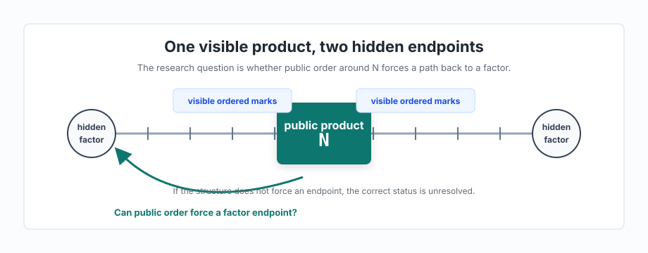
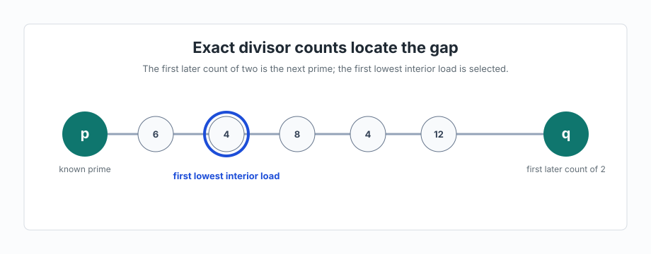
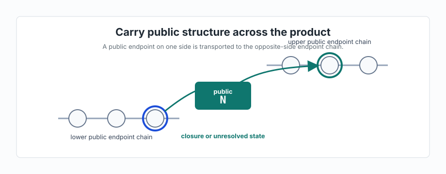
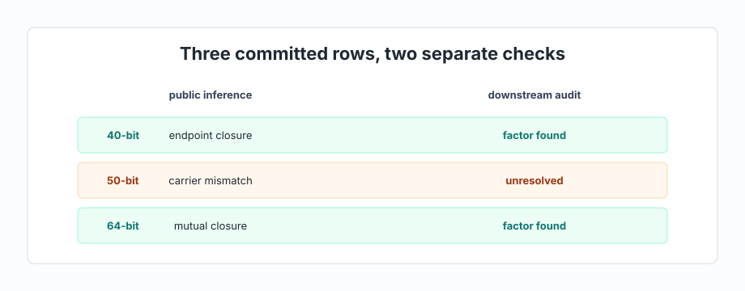
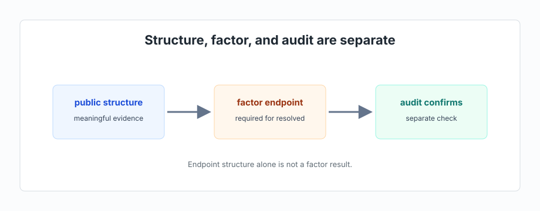
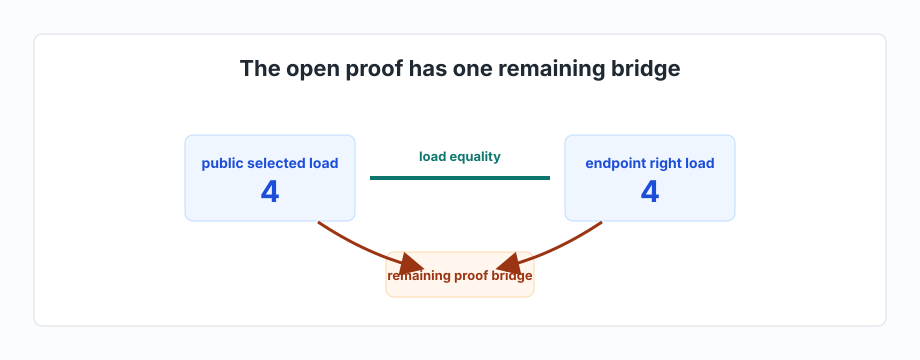
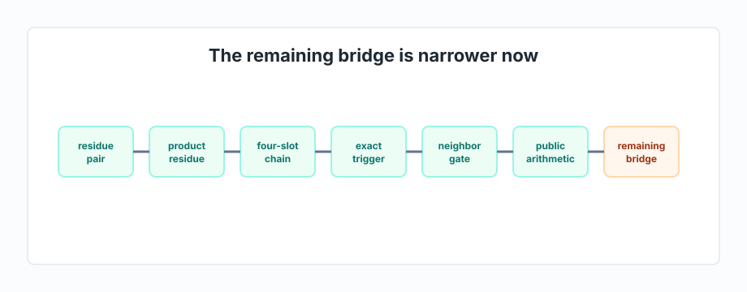
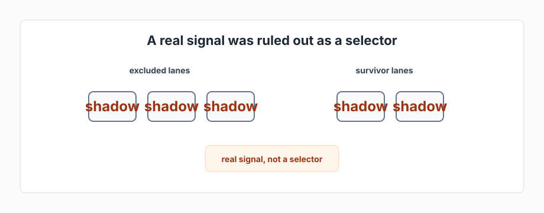
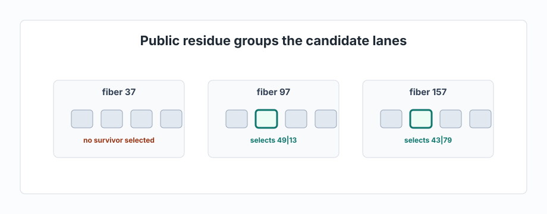
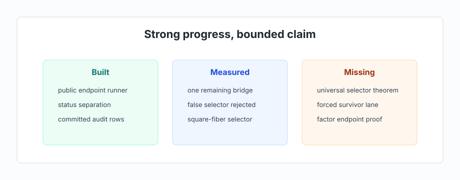

From Prime Gaps To Factor Recovery
Research panel skeleton for a ten-paragraph external status brief. Each panel pairs one plain-language paragraph with one infographic, backed by the evidence folders already collected.
The Public Factor Question
Factoring starts with one visible number and two hidden prime factors. This research branch asks whether the visible order around that number contains enough structure to point back to one of the hidden factors. The work treats the product as sitting inside a public neighborhood whose ordered marks can be carried from one side of the product to the other. The central question is whether that public structure forces a factor endpoint, or whether the honest result remains unresolved.
Evidence: ../paragraph-01-public-factor-question/

Proved Gap Foundation
The foundation is already proved for ordinary prime gaps. Start with a known prime and inspect the integers after it in order. The first later integer with exactly two divisors is the next prime, because having exactly two divisors is the definition of being prime. Between the two primes, every interior integer is composite, and its divisor count measures how many factor-choice channels it has. The selected interior point is the first composite where that load is as small as it gets inside the gap.
Evidence: ../paragraph-02-proved-gap-foundation/

Public Endpoint Translation
The factor branch translates the gap foundation into a public endpoint chain around a product. Begin with the visible product and the ordered marks near it. Choose a public endpoint on one side, carry that position through division by the product, and inspect the endpoint structure that appears on the other side. When both sides close against each other, the runner emits a public endpoint class. When the public structure fails the closure tests, the runner stops with an unresolved structural state.
Evidence: ../paragraph-03-public-endpoint-translation/

Current Live Runner
The live runner now has a clear committed surface. On the 40-bit row, public endpoint closure emits a factor endpoint and downstream audit confirms it. On the 50-bit row, the public structure reaches a carrier mismatch and the runner returns unresolved before audit. On the 64-bit row, mutual public closure emits a factor endpoint and downstream audit confirms it. These rows are implementation evidence for the current rule, not a universal theorem.
Evidence: ../paragraph-04-current-live-runner/

Status Separation
A key branch cleanup was semantic rather than decorative. Public endpoint structure is evidence, but it is not automatically a recovered factor. The current contract says a row is resolved only when public inference finds at least one actual factor endpoint and a separate downstream audit confirms that fact. Sidecar measurements, blocker notes, and survivor states remain useful research evidence, but they do not count as factor recovery.
Evidence: ../paragraph-05-status-separation-correction/

One Remaining Bridge
The recent proof search narrowed the open problem to one bridge. In the current surface, the public product lands at a selected point whose load is 4, and the transported endpoint side also carries load 4. The measured pattern says that this equality pins the right side and forces the decisive motion to the lower left side. The remaining proof obligation is to show why that left-side event must coincide with the public gate that selects the surviving factor lane.
Evidence: ../paragraph-06-one-remaining-bridge/

Bridges Crossed
Several bridges have already been crossed. The work first forced a residue pair for the hidden factors under the active public condition. It then tied that residue pair to the public product residue, reduced the lower-side motion to a four-slot chain, replaced an overly strong exact trigger with a smaller neighboring-gate condition, and finally translated that gate into public arithmetic. The remaining bridge is narrower because these earlier reductions removed broad alternatives.
Evidence: ../paragraph-07-bridges-crossed/

Invalidated Shortcut
The branch also ruled out a tempting shortcut. A broad shadow pattern appeared in the measured surface, and at first it looked like a candidate for separating the wrong lanes from the surviving lanes. The wider check showed the same shadow on the survivor lanes as well. That makes the shadow real, but not selector-grade. The result prevents the project from promoting a local pattern into a proof step that the evidence does not support.
Evidence: ../paragraph-08-invalidated-shadow-selector/

Square-Fiber Selector
The latest positive signal is more specific. The visible product residue groups twelve same-phase candidate lanes into three public square fibers, four lanes per fiber. The product residue alone does not choose the surviving lane, but a second public co-landing test does on the current matrix: one fiber selects no survivor, and the other two select exactly the two survivor lanes. This is a measured selector signal, not yet a universal selector theorem.
Evidence: ../paragraph-09-square-fiber-selector/

Current Status
The concise status is strong but bounded. The branch has built a public endpoint-chain runner, corrected its result language, recorded factor-confirmed 40-bit and 64-bit rows, preserved the unresolved 50-bit row, reduced the proof search to one bridge, ruled out a false selector, and found a sharper square-fiber selector signal. The remaining task is to turn that measured selector behavior into a public theorem that forces the survivor lane, and then to show that the forced lane carries a factor endpoint.
Evidence: ../paragraph-10-current-status-and-next-target/
